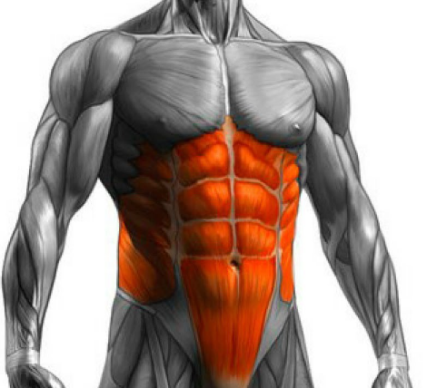
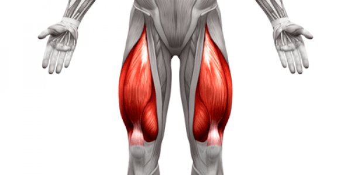

ENFOQUE CUÁDRICEPS: MIÉRCOLESIntensidad en Tren InferiorLa pierna requiere una demanda cardiovascular masiva. Los calentamientos protegen la pelvis, y las series efectivas se ejecutan hasta que sea físicamente imposible completar otra repetición limpia. Bloque 1: Activación y Núcleo• Calentamiento de Abdomen: Series metabólicas de crunches colgado o polea para estabilizar el core antes de los levantamientos pesados (Solo activación). • Calentamiento de Aductores en Máquina: Aperturas controladas para prevenir desgarros en la base de la pelvis (Solo aproximación).
 Bloque 2: Carga Pesada de Pierna• Hack Squat (Prensa Hack): Colocación de pies baja para maximizar la flexión de rodilla. Bajada profunda y pesadísima (1 calentamiento, 2 efectivas full fallo). • Extensión de Cuádriceps: Contracción estática de 1 segundo en la parte más alta para bombear sangre al recto femoral (1 calentamiento, 2 efectivas full fallo). • Costurera (Pantorrilla Sentado): Aislamiento del sóleo mediante una elevación de talones lenta con pausa abajo para estirar el tendón (1 calentamiento, 2 efectivas full fallo).
 |